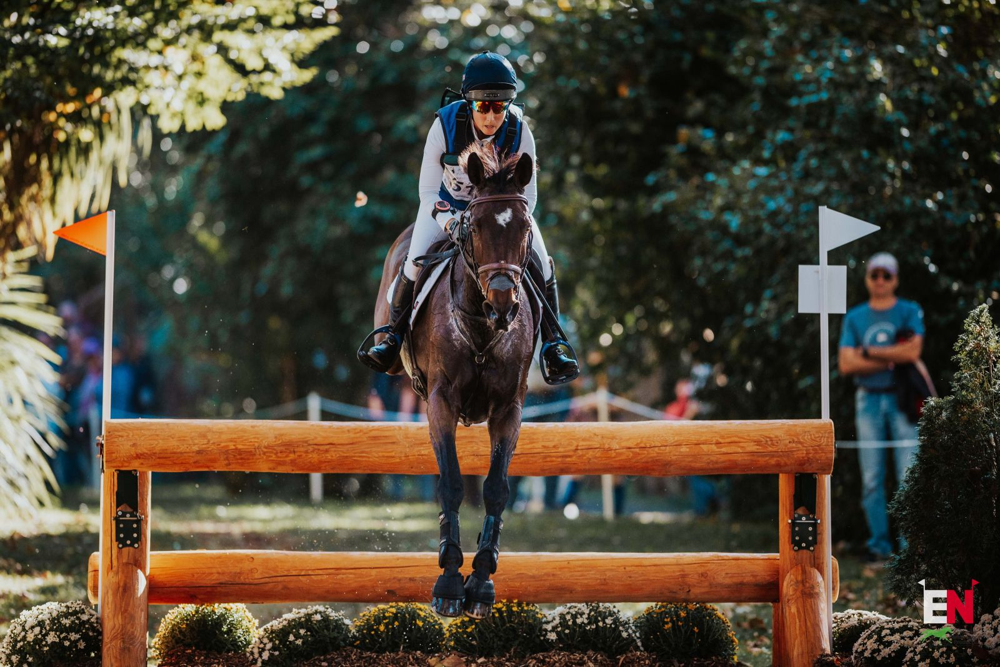

Gran Bretaña confirma su equipo para la Copa de Naciones del CCIO4*-S de Bicton
British Eventing ha anunciado los cuatro binomios que defenderán los colores británicos en la Copa de Naciones del CCIO4*-S de Bicton, programado entre el 27 y el 31 de mayo.

Foto: assets.eventingnation.com
La federación británica ha confirmado la alineación que representará a Gran Bretaña en la Copa de Naciones del CCIO4*-S de Bicton, con cuatro binomios que buscarán el triunfo por equipos en esta cita oficial de la FEI. El combinado nacional estará dirigido por el chef d'équipe Richard Waygood, encargado de coordinar la estrategia en las tres fases del completo.
La expedición británica estará integrada por Kirsty Chabert (Salisbury, Wiltshire) con la yegua de 17 años Classic VI, propiedad de John Johnston, Carole Somers y Kate Ward; Laura Collett (Cheltenham, Gloucestershire) con Hester, de 15 años y propiedad de Lucy Nelson; Tom McEwen (Malmesbury, Gloucestershire) con el castrado de nueve años Shannondale Arnold, del matrimonio Lambert; y Tom Rowland (Cirencester, Gloucestershire) con LB Mettaphor, de 11 años y propiedad de Jo Handman. El equipo cuenta con el respaldo del Programa World Class de la Federación Ecuestre Británica, financiado por UK Sport mediante fondos de la Lotería Nacional, cuyo objetivo es desarrollar talento y maximizar el rendimiento en competiciones internacionales.
— Redacción de Hípica al Día